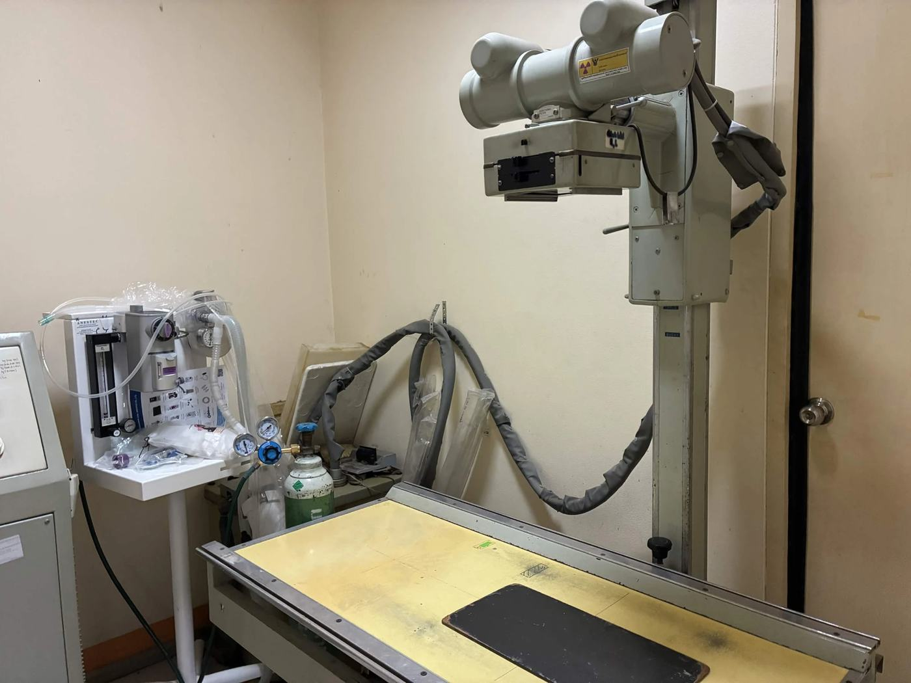
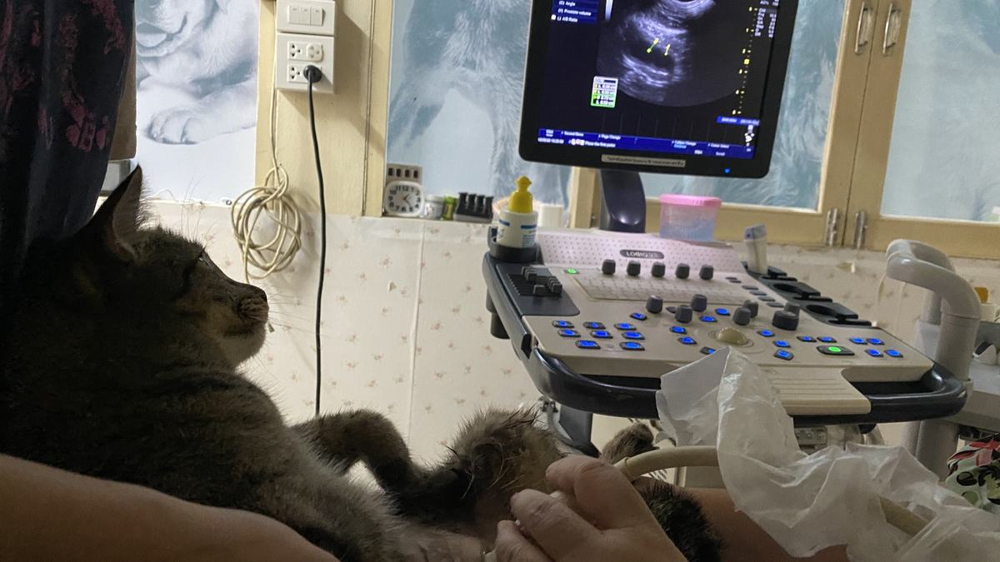

การตรวจทางห้องปฏิบัติการช่วยให้วินิจฉัยโรคได้แม่นยำขึ้น มองเห็นสิ่งที่การตรวจร่างกายภายนอกมองไม่เห็น เช่น การทำงานของอวัยวะภายใน การติดเชื้อ หรือความผิดปกติของเลือด
รายการตรวจที่มี
- ตรวจความสมบูรณ์ของเม็ดเลือด (CBC)
- ตรวจค่าการทำงานของตับ ไต และค่าเคมีในเลือด
- ตรวจปัสสาวะและอุจจาระ
- ตรวจหาเชื้อและพยาธิในเลือด
- ตรวจคัดกรองก่อนผ่าตัด/วางยาสลบ
ตรวจด้วยภาพวินิจฉัย
- เอกซเรย์ (X-ray) — กระดูก ข้อต่อ ช่องอก ช่องท้อง และหาสิ่งแปลกปลอม
- อัลตราซาวด์ — ดูอวัยวะภายในแบบเรียลไทม์ ตับ ไต กระเพาะปัสสาวะ หัวใจ และตรวจการตั้งท้อง
- กล้องส่องตรวจ (Endoscope) — ส่องดูทางเดินอาหารและทางเดินหายใจโดยไม่ต้องผ่าตัดใหญ่ และคีบสิ่งแปลกปลอมที่กลืนเข้าไปได้

ห้องเอกซเรย์ — ถ่ายและอ่านผลได้ที่คลินิก ไม่ต้องส่งต่อ

อัลตราซาวด์ช่องท้อง — เห็นอวัยวะภายในทันทีบนจอ ส่วนใหญ่ไม่ต้องวางยาสลบ